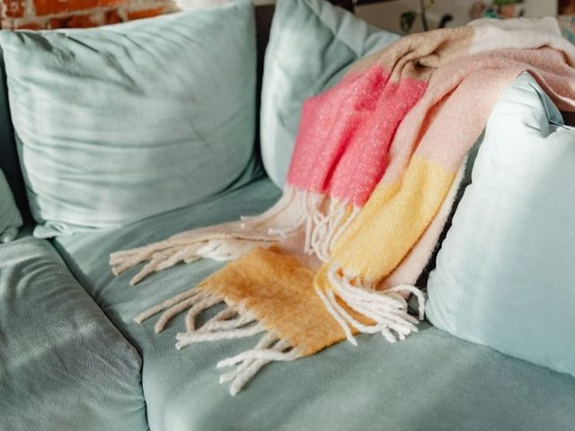
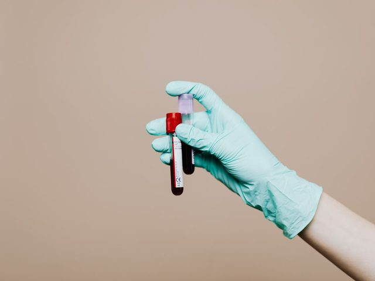
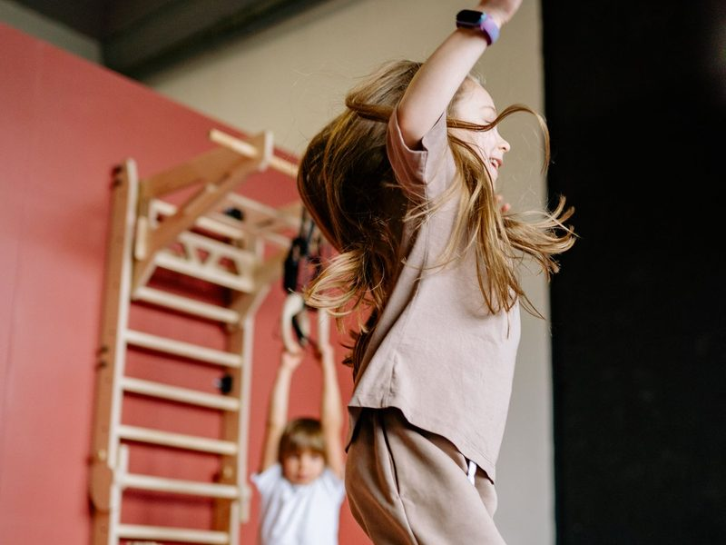
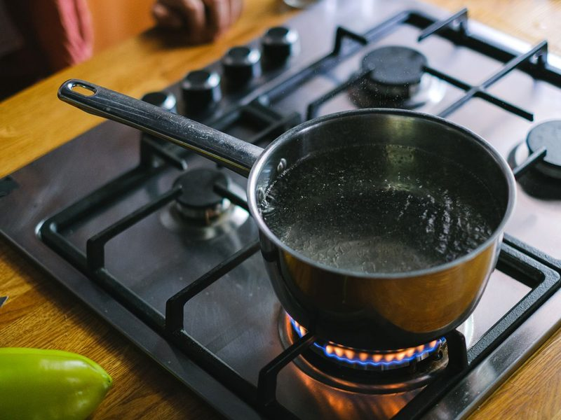

UNIT 6 · VOCABULARY
B 開頭（三）
B-III
33 個單字聽・唸・用
本單元單字一覽
WORD UP「B-III」的 33 個字（blank 到 brave）。紅色＝要複習，藍色標籤＝WORD UP 標熟記、還要在這裡考對。
blankblanketblindblockbloodblouseblowblueboardboatbodyboilbombbonebookbookcaseboredboringbornborrowbossbothbotherbottlebottombowbowlbowlingboxboybrainbranchbrave
每個字都有 🔊，先聽發音、跟著唸，再看例句。
單字 1–4

blank
空白的；空格adj./n.
Write your name in the blank.
把你的名字寫在空格裡。
把你的名字寫在空格裡。

blanket
毯子n.
It's cold. Do you need a blanket?
好冷，你需要毯子嗎？
好冷，你需要毯子嗎？
🦮
blind
瞎的；看不見的adj.
The blind man walks with a guide dog.
那位盲人帶著導盲犬走路。
那位盲人帶著導盲犬走路。

block
街區；積木；擋住n./v.
The library is two blocks away.
圖書館在兩條街外。
圖書館在兩條街外。
單字 5–8

blood
血n.
His knee was covered with blood.
他的膝蓋都是血。
他的膝蓋都是血。

blouse
（女用）襯衫n.
She is wearing a white blouse.
她穿著一件白色女襯衫。
她穿著一件白色女襯衫。

blow
吹v.
Make a wish and blow out the candles.
許個願，然後吹熄蠟燭。
許個願，然後吹熄蠟燭。
blue
藍色的；憂鬱的adj./n.
The sky is blue today.
今天天空是藍色的。
今天天空是藍色的。
單字 9–12

board
板子；登上（交通工具）n./v.
Please write your answer on the board.
請把答案寫在板子上。
請把答案寫在板子上。

boat
船n.
We went to the island by boat.
我們搭船去那座島。
我們搭船去那座島。

body
身體n.
Exercise is good for your body.
運動對身體好。
運動對身體好。

boil
煮沸；水煮v.
Boil the water before you drink it.
水要煮沸再喝。
水要煮沸再喝。
單字 13–16
💣
bomb
炸彈n.
The police found a bomb in the car.
警察在車上發現一顆炸彈。
警察在車上發現一顆炸彈。
bone
骨頭n.
The dog is chewing a bone.
那隻狗在啃骨頭。
那隻狗在啃骨頭。
book
書；預訂n./v.
We booked a room at the hotel.
我們訂了飯店的房間。
我們訂了飯店的房間。

bookcase
書櫃n.
The bookcase is full of comics.
書櫃裡都是漫畫。
書櫃裡都是漫畫。
單字 17–20

bored
（人）感到無聊的adj.
I'm bored. Let's go out.
我好無聊，我們出去吧。
我好無聊，我們出去吧。

boring
（事物）無聊的adj.
The movie was so boring.
那部電影好無聊。
那部電影好無聊。

born
出生的adj.
I was born in 2012.
我在 2012 年出生。
我在 2012 年出生。

borrow
借（入）v.
Can I borrow your eraser?
我可以借你的橡皮擦嗎？
我可以借你的橡皮擦嗎？
單字 21–24

boss
老闆；上司n.
My mom's boss is very kind.
我媽媽的老闆很好。
我媽媽的老闆很好。
✌️
both
兩者都adj./pron.
Both my parents are teachers.
我爸媽兩個都是老師。
我爸媽兩個都是老師。
😤
bother
打擾；煩擾v.
Don't bother me. I'm studying.
不要吵我，我在讀書。
不要吵我，我在讀書。

bottle
瓶子n.
I drink a bottle of water every day.
我每天喝一瓶水。
我每天喝一瓶水。
單字 25–28
⬇️
bottom
底部n.
The answer is at the bottom of the page.
答案在這頁的最下面。
答案在這頁的最下面。

bow
鞠躬；弓；蝴蝶結v./n.
The students bowed to the teacher.
學生向老師鞠躬。
學生向老師鞠躬。

bowl
碗n.
I ate two bowls of rice.
我吃了兩碗飯。
我吃了兩碗飯。

bowling
保齡球n.
Let's go bowling this weekend.
我們這週末去打保齡球吧。
我們這週末去打保齡球吧。
單字 29–32

box
箱子；盒子n.
There are toys in the box.
盒子裡有玩具。
盒子裡有玩具。

boy
男孩n.
The boy is my little brother.
那個男孩是我弟弟。
那個男孩是我弟弟。

brain
腦n.
Reading is good for your brain.
閱讀對大腦很好。
閱讀對大腦很好。

branch
樹枝；分店n.
A bird is sitting on the branch.
一隻鳥停在樹枝上。
一隻鳥停在樹枝上。
單字 33–33

brave
勇敢的adj.
The brave boy saved the cat.
那個勇敢的男孩救了貓。
那個勇敢的男孩救了貓。
常考片語
| 說法 | 中文 | 例子 |
|---|---|---|
| borrow A from B / lend A to B | 向 B 借 A ／ 把 A 借給 B | borrow a pen from Amy ／ lend a pen to Amy |
| be born in | 出生於（年、月、地點） | be born in Taipei |
| both A and B | A 和 B 兩個都 | both Tom and Ben |
| at the bottom of | 在…的底部 | at the bottom of the sea |
| blow out | 吹熄 | blow out the candles |
| go bowling | 去打保齡球 | go bowling with friends |
both A and B 當主詞時動詞用複數：Both Tom and Ben are tall.
容易搞混的字
| 字 | 用法 | 例子 |
|---|---|---|
| bored / boring | 人覺得無聊 ／ 事物很無聊 | I am bored. ／ The class is boring. |
| blank / blanket | 空格 ／ 毯子 | fill in the blank ／ a warm blanket |
| bowl / bowling | 碗 ／ 保齡球 | a bowl of soup ／ go bowling |
| book | 書（名詞）／ 預訂（動詞） | read a book ／ book a ticket |
| bow | 鞠躬 ／ 弓、蝴蝶結（唸法不同） | bow to the king ／ a red bow |
快問快答：中文 → 英文
1空白的；空格blank
2瞎的；看不見的blind
3血blood
4吹blow
5板子；登上（交通工具）board
6身體body
7炸彈bomb
8書；預訂book
快問快答：英文 → 中文
1bored（人）感到無聊的
2born出生的
3boss老闆；上司
4bother打擾；煩擾
5bottom底部
6bowl碗
7box箱子；盒子
8brain腦
學完了！接下來
複習方法
review
- 回到「📗 單字卡」，按「遮中文」自己考自己
- 再按「遮英文」，看中文說出英文
- 每個例句跟著 🔊 唸一次
準備好了
- 按右上角「📝 前往測驗」
- 測驗錯的題目要訂正到全對
- 訂正完成補送 1 點